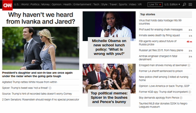

Know Your Dependencies
This happened today. When I went to go look for the link for this post, I find this on cnn.com.
{kind=link}
This is totally reasonable. Put that thing that my kill people _today_ over there on the right, but let's definitely hilight the fact that we haven't heard from the power couple on the left. Good plan.
Everybody on infosec twitter is going back and forth about patchability of the systems in hospitals that got infected. I only have second-hand knowledge of this difficulty, but at some point, this seems like it's a deeper version of left-pad.
Seems like a stretch, right? left-pad was a "Know Your Dependencies" problem. Huge .js packages were turtled all the way down to this lowly 11 lines of code.
The problem was that nobody knew all their dependencies and this one just went poof.
Fundamentally, basing your half-million dollar MRI machine or your patient record system on Windows is the same thing. You can't, as a developer, know what lies beneath until someone shows you. Unfortunately, someone hooked crypto-locker malware up to The Shadow Broker's exploit of MS17-010 and showed the world.
Basing your critical life safety machines on third party software you aren't even being put in a position to understand is risky. Further, telling your customers they get to pay money to get patches for that dependency tested and validated causes those customers to not patch. Worse, these things are sold with (then current) older versions of Windows that aren't supported any more. If patching is hard, upgrading is harder.
Do you want remotely exploitable machines? Because this is how you get REMs.
I truly don't want this to be a FLOSS/closed source battle, and obviously requiring changes to these systems now isn't helpful, but can we all please stop putting infrastructure on things nobody outside of one company can audit? Can we please stop taking that shortcut because it's at hand? If not, keep your software up to date, and validate that it works with patches and new releases proactively, within some reasonable timeframe.
"But nobody can afford to do that."
Bull. We're paying for it now. This technical debt has just been deferred until someone else deemed it due. It's debt that nobody made accounting aware of on either side of the customer/vendor relationship. Restoring these systems does nothing to "fix" the problem either. Networks will be partitioned, firewalls and airgaps put into place, but the OS isn't going to get patched.
Hold these vendors accountable for their effectively unpatchable systems. Come up with wage reports for those working this incident to show the cost. Go to the C-suite with these reports in hand even if they're not asked for.